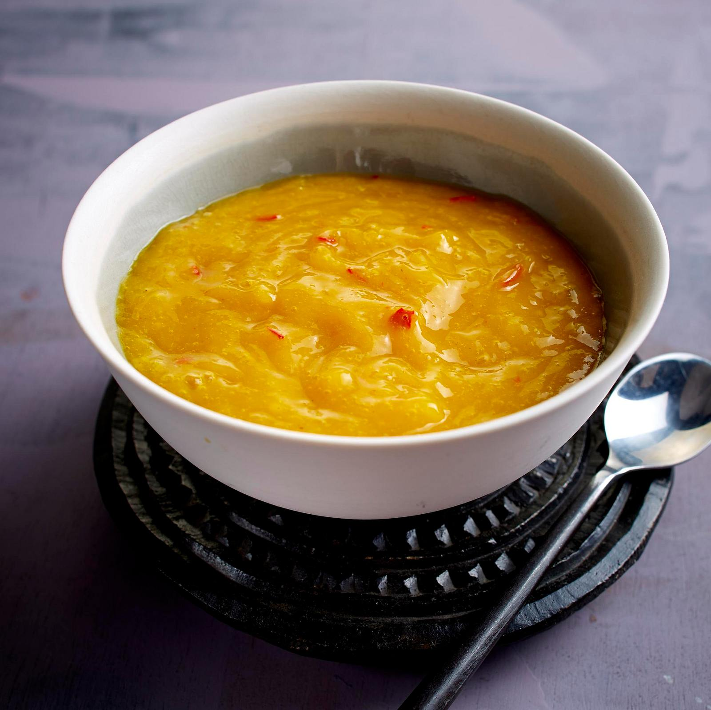

Mango Ketchup

Description
This sweet and tangy Mango Ketchup combines ripe mangoes with a blend of spices, creating a unique twist on a classic condiment.
Perfect for dipping or as a flavorful addition to your favorite dishes, this homemade sauce brings a tropical flair to every bite.
Ingredients
- 1 1/2 cups coarsely chopped ripe mango
- 1/4 cup ketchup
- 1 tablespoon low-sodium soy sauce
- 1 tablespoon cider vinegar
- 1 teaspoon ginger paste
- 1 teaspoon brown sugar
- 1/2 teaspoon hot sauce, or to taste
- salt to taste
Steps
- 1. In a saucepan over medium-low heat, add mango, ketchup, soy sauce, vinegar, ginger root, brown sugar, hot sauce, and salt. Simmer until mixture breaks down and thickens, stirring occasionally, 5 to 7 minutes.
- 2. Process the mixture with an immersion blender, or add to a food processor or blender, and pulse until smooth. Transfer to an airtight container. Refrigerate until chilled.